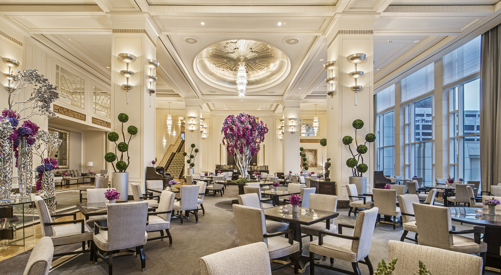

Wedding reception hall that can be easily customized with a simple catering menu and kitchen access for food preparation and serving A family search center that supports family search and ordinance work Free access to changing rooms and bathroom facilities for temple patrons who have traveled far and need to change to and from church clothes A playroom and low-cost, short-term babysitting services for the children of patrons Long-term stay accommodations in kitchenette suites for full-time temple missionaries
